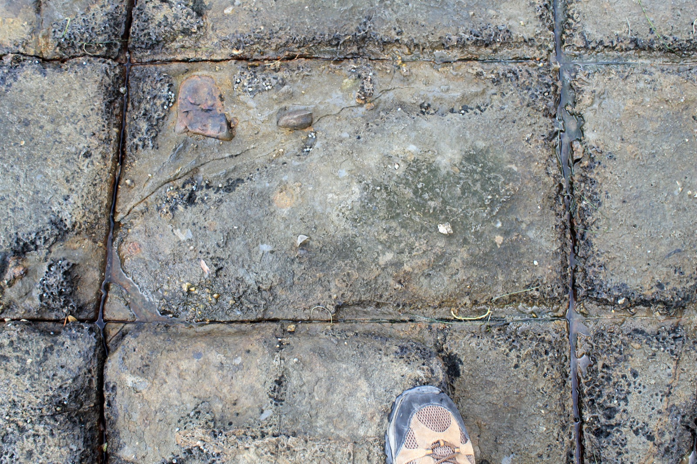
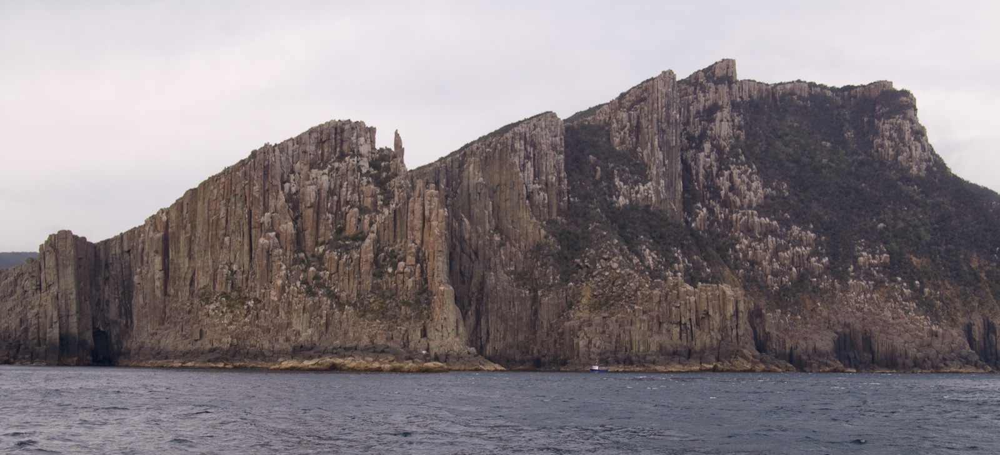
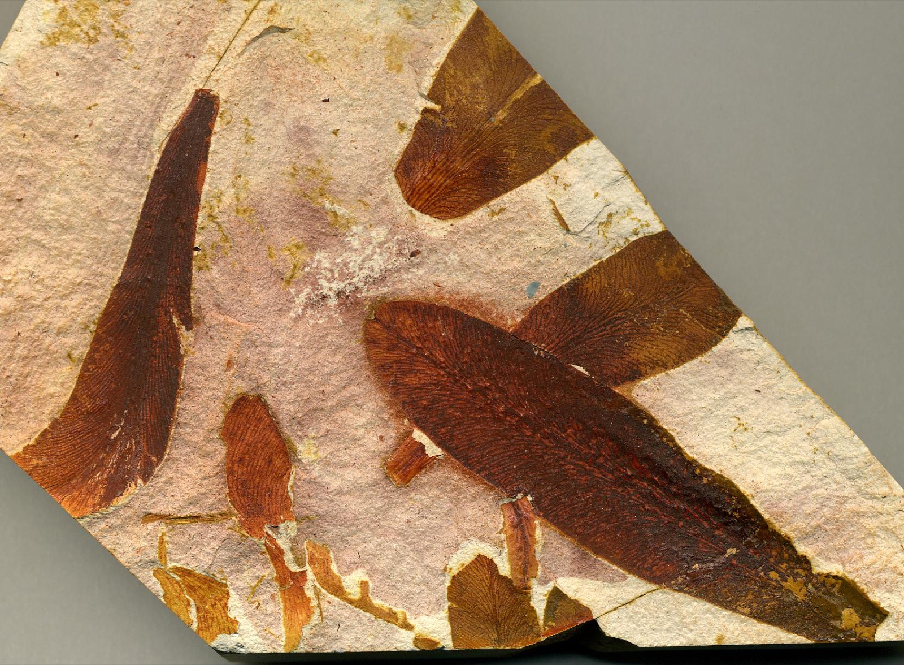
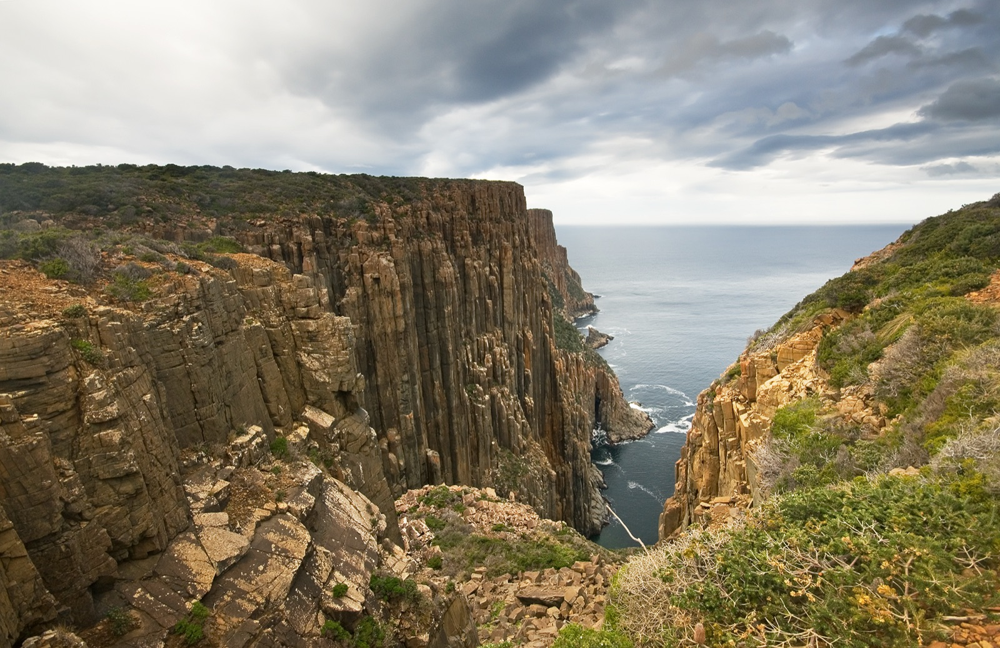
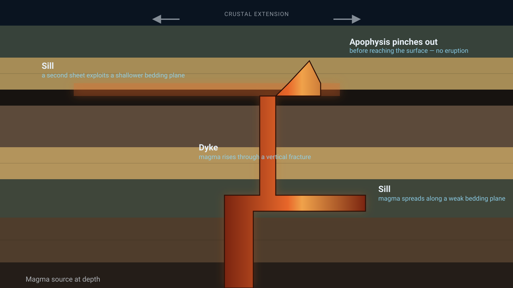
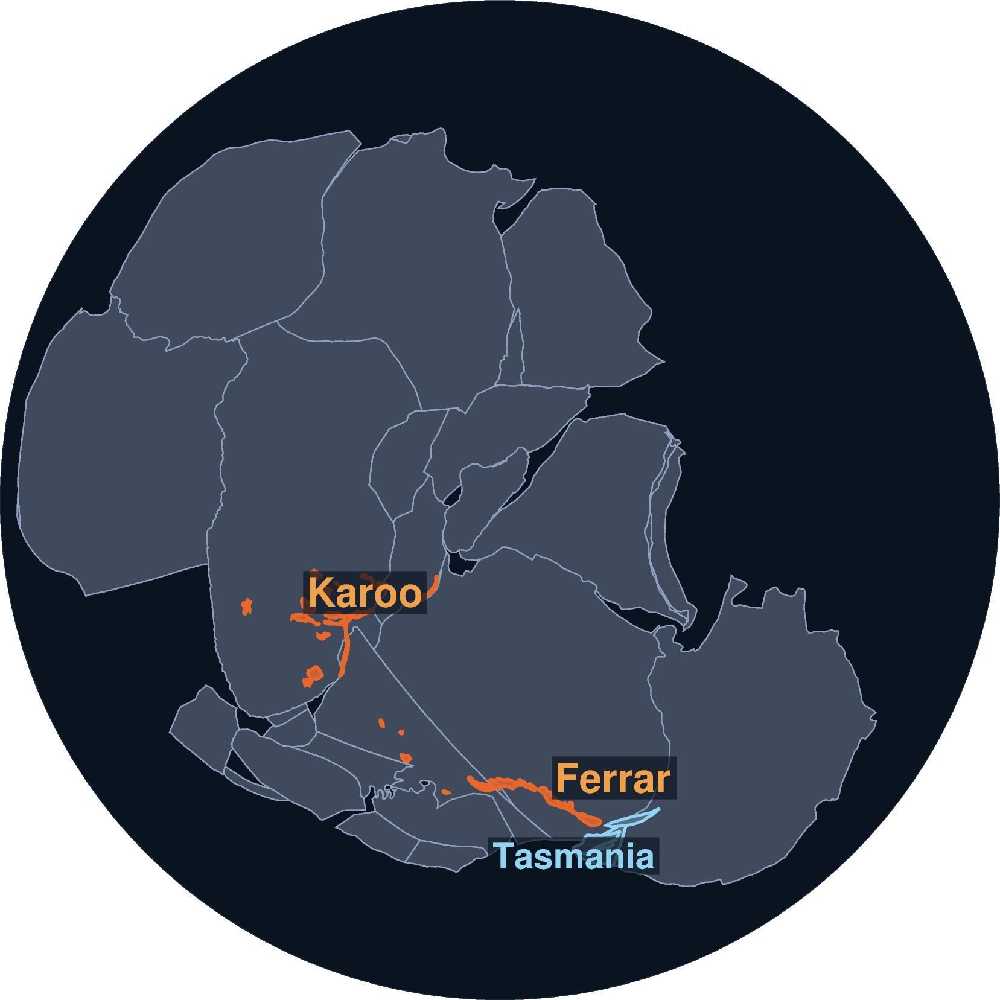
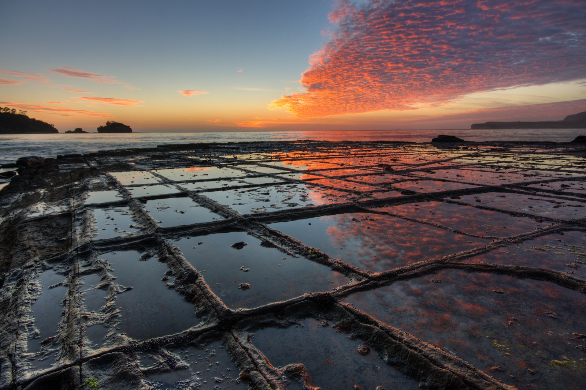

A story map
Southeast Tasmania
From the cold edge of Gondwana to the dolerite cliffs of Port Arthur and Eaglehawk Neck.
Scroll
In the Permian, Tasmania was not a small island in a warm temperate sea. It sat on the southern margin of Gondwana, at high southern latitude, close to the south pole and often much nearer to polar conditions than it is today.
That matter mattered for both climate and sedimentation. The region lay in a cold, seasonally harsh setting, with glacial, fluvial, and swampy environments all interacting across a broad southern margin.

One
Permian–Triassic basins
Across southeastern Tasmania, the Permian–Triassic succession records the transition from glacially influenced basin fill to more terrestrial, fluvio-lacustrine and floodplain sedimentation.
Conglomerates, sandstones, siltstones and coal-bearing units point to a landscape of rivers, floodplains, swamps and active tectonic subsidence. That is exactly the kind of basin architecture expected along a rifted southern Gondwanan margin.

These rocks are more than a record of changing climates. They are a record of a whole environment in motion: sediment supply, basin accommodation, and the long-lived south-polar setting of the region.
Two
Fossils and paleoenvironments
At the same time, the fossil record anchors the interpretation. Glossopteris and other plant assemblages are especially important: they describe a cool, wet, strongly seasonal ecosystem rather than a warm tropical one.

Plant fossils, trace fossils and associated sedimentary textures all point to floodplain, channel and mire settings. In other words, the region was not a deep marine basin but a landward margin where tectonics, climate and sedimentation were tightly linked.
That is why the southeastern Tasmanian succession matters. It sits at the junction between climate records and the tectonic evolution of Gondwana, linking the southern polar world to the sedimentary record preserved in the rocks.
Three
Mesozoic volcanism
By the Jurassic and early Cretaceous, the region had entered a new chapter. The Jurassic dolerites that now dominate much of Tasmania record a major magmatic episode linked to crustal extension and regional stress.

These intrusions cut across older sedimentary rocks as dykes and spread along bedding planes as sills. The geometry tells the story. Vertical fractures provided pathways upward; weaker sedimentary packages provided horizontal pathways outward.

That combination created the layered, stepped topography that is so characteristic of southeastern Tasmania, where dolerite sheets and feeder structures shape the ridges, cliffs and coastal escarpments.
Four
Why dyke and sill formation matters
Magma does not rise at random. It exploits the crust's mechanical weaknesses. Fractures, faults and bedding planes control the route. The stress field and the host-rock stratigraphy determine whether the magma forms a dyke, a sill or a complex feeder system.
That makes the dolerites more than just igneous bodies. They are structural evidence. Their geometry records the way the crust was being stretched and how magma pressure interacted with sedimentary layering, exactly the processes that produced the broad intrusive province of southern Tasmania.

The Karoo–Ferrar event was not just large. It was fast: most of the volcanism and sill emplacement dates to a narrow window around 183 Ma. That timing lines up, almost exactly, with one of the sharpest disruptions to the Jurassic ocean on record — the Toarcian Oceanic Anoxic Event.
Marine sediments of that age worldwide carry a sharp negative shift in carbon isotopes, a spike in sea temperature, and the spread of oxygen-starved, organic-rich black shale across shelf seas — alongside a marked extinction among ammonites and other invertebrates. The leading explanation is the eruption itself: volcanic CO2, together with methane baked out of organic-rich sediment by advancing sills — in the Karoo Basin specifically, sills intruding coal and shale — pushed the greenhouse hard enough to strip oxygen from the oceans.
It is worth sitting with that. The same sill geometry shown a moment ago, magma spreading along weak bedding planes through coal-bearing units like the ones in the Permian–Triassic succession here, is implicated, at Karoo Basin scale, in reshaping the chemistry of an entire ocean. Tasmania's dolerites are a small, well-exposed corner of a province big enough to have changed the planet's climate.
The comparison with Mount Wellington and Kunanayi is useful: the same broad principles apply, with steep feeder zones, tabular sheets, and landscape-scale control by rock strength and the local stress regime.
Five
Port Arthur and Eaglehawk Neck
Along the southeastern coast, the story becomes tangible. Near Port Arthur and Eaglehawk Neck, older sedimentary rocks are cut, disrupted and intruded by later dolerite bodies.

The shore here is a natural cross-section through the region's history. Cliffs show how dolerite crystallised in fractures and along contacts, while weathering exposes the relationship between the host sediment and the intruding magma.
These outcrops enable a direct read of the geologic processes: magma emplacement, brittle fracture, later erosion, and the exposure of the deeper architecture at the modern coast.
Six
Deep-time geology in one place
Southeast Tasmania preserves a long and layered record: a high-latitude Gondwanan setting, glacial and fluvial Permian–Triassic sedimentation, a fossil-rich terrestrial ecosystem, and then later intrusion of a vast dolerite province.
Each part of the system matters. The fossils tell us the environment; the sedimentary rocks tell us how basin conditions changed; the dolerites tell us how the crust was stressed and how magma exploited it. Together they give a coherent picture of the region through deep time.
In that sense, the geology of southeast Tasmania is not a local sidebar. It is a Gondwanan story told in the rocks of one coastline.